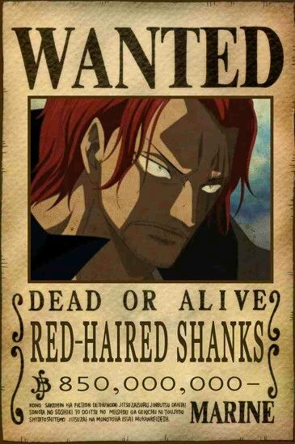
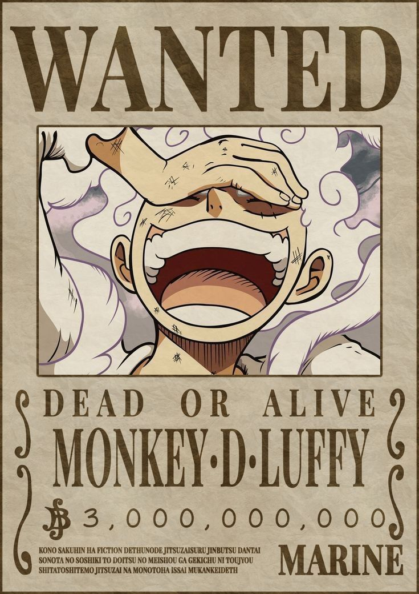
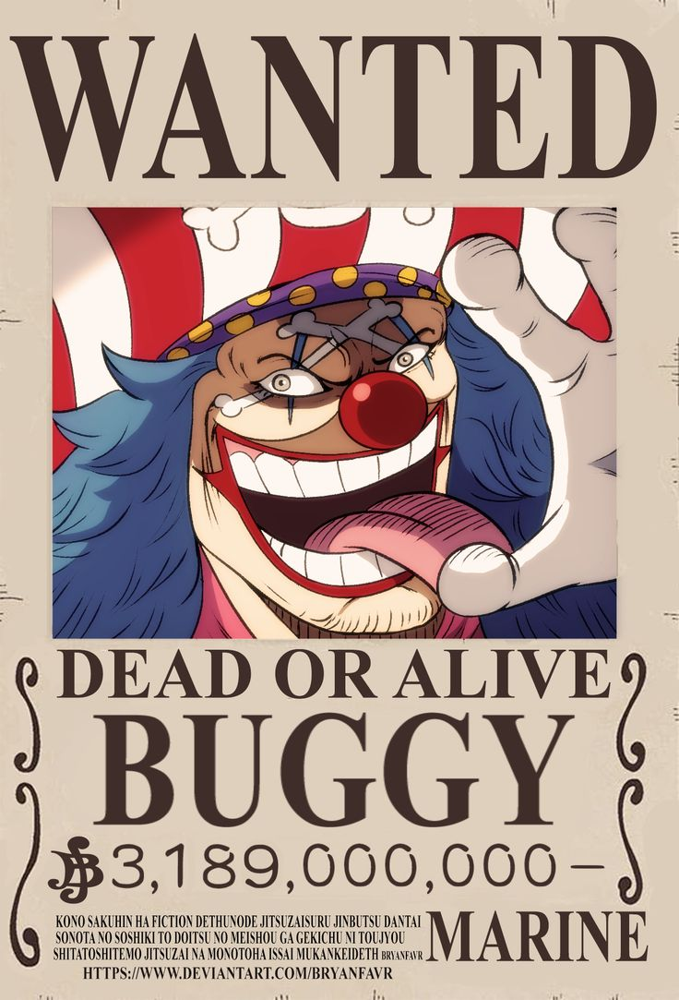

|
 Red Hair Shanks Shanks, also known as Red-Haired Shanks, is one of the Four Emperors in One Piece and captain of the Red-Haired Pirates. Known for his powerful Haki and calm nature, he values peace but commands great respect. He inspired Luffy to become a pirate and entrusted him with his iconic straw hat. Shanks remains a mysterious yet influential figure in the series. |
 Black Beard Marshall D. Teach, known as Blackbeard, is one of the most dangerous and ambitious pirates in One Piece. As a member of the Four Emperors, he possesses the rare ability to use two Devil Fruits: the Yami Yami no Mi and the Gura Gura no Mi. Cunning and ruthless, Blackbeard betrayed Whitebeard’s crew and has rapidly risen in power. His actions continue to shake the balance of the pirate world. |
 Straw Hat Luffy Monkey D. Luffy is the captain of the Straw Hat Pirates and the main hero of One Piece. He gained rubber-like abilities from eating the Gomu Gomu no Mi, later revealed as the mythical Hito Hito no Mi, Model: Nika. Luffy dreams of becoming the Pirate King and is known for his fearless spirit, loyalty to his crew, and love for freedom. His journey has made him one of the most powerful and inspiring figures in the Grand Line. |
 Buggy The Clown Buggy the Clown is a former Roger Pirate and now one of the Four Emperors in One Piece. With the powers of the Bara Bara no Mi, he can split his body into pieces and resist slashing attacks. Known for his loud personality and comic antics, Buggy often stumbles into power through luck and manipulation. Despite his flaws, he’s become a surprisingly influential figure in the pirate world. |